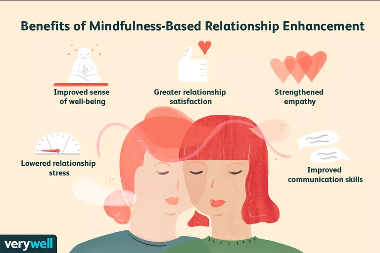

Mindfulness-based relationship enhancement (MBRE) is a set of techniques used with couples who are already content with each other (i.e. not in distress) to help strengthen coping skills related to stress within the relationship.
"
If you would be loved, love, and be loveable.
"
The ultimate goal of mindfulness-based relationship enhancement is to learn how to be present in the
moment, accepting of whatever challenges you are facing individually and as a couple, and taking your time reacting and making decisions to avoid the negative impact of hasty choices made in the heat of the moment.
Defining Mindfulness
Before we start to understand mindfulness-based relationship enhancement, it is helpful to take a step back and learn a bit about the concept of mindfulness.
Mindfulness refers to being in a state of focused attention and awareness of your present experience. It also involves being curious, open, and accepting of that experience.
When you are acting mindfully, you don't immediately react to thoughts or emotions that pass through your mind. Instead, you act as a non-judging observer who explores and acknowledges feelings without immediately reacting. In this way, the roots of mindfulness lie in Buddhist or Zen meditation.
How does mindfulness help you? When you learn to practice mindfulness, you are learning how to cope in all of the different areas of your life. Rather than being a skill, mindfulness is a way of approaching life and the world.
Mindfulness makes all things in life more pleasant, it helps you to think more clearly, aids in being "in the moment," and increases your ability to cope with stressful events.

What to Expect
Knowing what you can expect to get out of a mental health day is important. It's important to remember that it isn't a day to hide from your problems.
Problems can seem harder to deal with when they seem close, overwhelming, and inescapable. Taking a mental break from work and spending some time on self-care can sometimes give you the mini-break you need to head back into things with a clear head.
Decide What You Need Most
Sometimes this one is a no-brainer—if you're exhausted, your body will be screaming that it needs to rest. Of, if you feel you can't face another day of hard work, you may just need to have some fun. However, if you're feeling overwhelmed, you may not be as aware of your needs.
Take a minute and really reflect: Would you benefit the most from some tension relief? Or from making a few changes that will relieve stress in the future? Some time with a loved one? Or just a change of scenery? As different stressors require different responses, different types of mental health days fill unique needs.
If You Need to Relax
Taking a mental health day often means taking time out to relax. That can mean watching TV in pajamas for hours, or puttering around the house and doing nothing. As long as this isn't an everyday thing, that's fine. Some activities can take a little front-end effort and feel immensely relaxing once they're completed.
What Is Mindfulness-Based Relationship Enhancement?
Mindfulness-based relationship enhancement is simply the extension of mindfulness techniques to the relationship realm. MBRE has the same purpose as mindfulness-based stress reduction (MBSR), founded by American professor of medicine Jon Kabat-Zinn, except that it is applied to couples.
Instead of allowing disagreements to escalate, which can happen when couples react in haste or out of anger or anxiety, MBRE teaches couples how to prevent and diffuse disagreements and conflict.
MBRE also involves gaining insight into your own patterns of interactions in your relationship, and feelings and thoughts. It could be that you and your spouse have each fallen into negative ways of thinking or interacting with each other that could be improved.
What's the advantage of mindfulness in a relationship? In general, being mindful as a couple means not getting caught up in both the little annoyances of life, as well as not being overwhelmed by the larger life challenges.
It means being flexible and non-judgemental, accepting differences, being less reactive, and being more objective. All of these qualities, both on a personal level and as a couple, will serve you well in facing the world together—as well as simply spending time with one another.
A Word From Verywell
Mindfulness-based relationship enhancement has a long history and proven benefits to help you build a stronger and more resilient foundation as a couple. If you are already in a happy and positive relationship, MBRE may be helpful to prepare you for the life challenges you will eventually face, such as having children, job loss, financial difficulties, illness, etc.
Whereas many couples may be thrown off by these events, through MBRE you will be better prepared to respond to each other in an adaptive way and be mindful of how your individual behavior affects your relationship and all areas of your life.